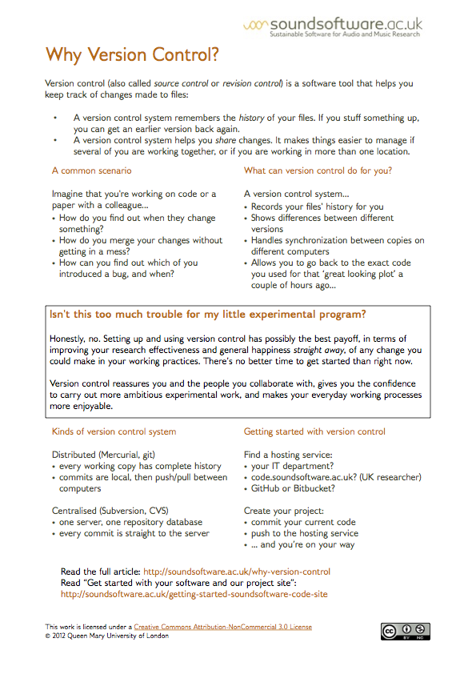

Printable Handouts and Guides
In this page you can find the printable resources associated with the different tutorials and workshops we've organised so far. This page will keep being updated as we organise more events, so watch this space!
Getting Started with code.soundsoftware.ac.uk Handout on how to get started with the code.soundsoftware facility—a software project hosting site for use by UK audio and music researchers. Find the site here. |
Publishing your research codeThis handout focuses on the importance of publishing research code in the audio and music research areas and some advices so that researchers get around to do it. |
Publishing your research dataSimilarly to research code, research data publication allows your data to be reused by other researchers e.g. to validate your research or to carry out follow-on research. To that end, a suitable data publication host will allow your data to be discovered and will be publicly accessible. This handout focuses on some of the most common questions related to this issue. |
Version Control
 |
Introduction to Open Source Software LicensesPlease read this handout if you plan to start writing or are about to publish your research code. If you don't use any licence on your code, other people can't legally make use of your code, so you need to use a licence to let them know what they can do with it. If you wish to learn more about licenses, please take a look at this handout. |
Unit Testing: Why Bother? This handout focuses on unit testing: the practice of testing the components of a program automatically, using a test program to provide inputs to each component and check the outputs. |
Unit Testing: An Audio Research Example This handout has an example of unit testing applied to an audio-to-note method for solo vocal music recordings. Please find the accompanying code here. |